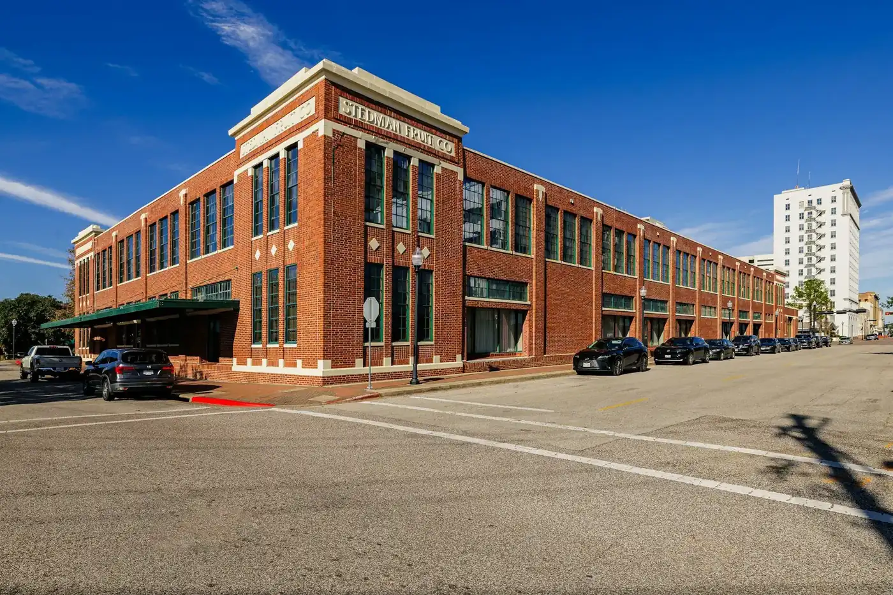

Guide · updated 5 November 2026
How much can I borrow against commercial property?
Usually 50% to 70% of what the lender's valuer says the property is worth, and sometimes less than that once the lender checks whether the rent or the business can carry the repayments. Two limits apply and the lower one wins. Here's how each is worked out, with the numbers.
What's the short answer?
Your limit is typically the lower of two numbers: the LVR (loan-to-value ratio) cap and the serviceability limit. For standard commercial property, most lenders land somewhere between 50% and 70% of valuation.
LVR is the loan as a percentage of the property's value. A 65% LVR on a $2,000,000 property is a $1,300,000 loan.
Serviceability is whether the income behind the loan covers the repayments with room to spare. For an investor that's the rent. For an owner-occupier it's what the business earns after paying you.
It's easy to assume the LVR cap sets the number. Often it doesn't. In the worked example below, the income limit comes in well under the LVR limit, which is the usual surprise.
How much does the LVR cap let me borrow?
On a $2,000,000 valuation, somewhere between $1,100,000 for a specialised property and $1,400,000 for an industrial unit. The table uses the top of each estimated band from our calculator (industrial 65–70%, retail and office 60–65%, medical and childcare 60–70%, specialised 50–55%). They're industry estimates, not any one lender's policy.
| Property type | Indicative LVR band | Max loan on a $2,000,000 valuation | Deposit needed (before costs) |
|---|---|---|---|
| Industrial | 70% | $1,400,000 | $600,000 |
| Retail | 65% | $1,300,000 | $700,000 |
| Office | 65% | $1,300,000 | $700,000 |
| Medical / childcare | 65% | $1,300,000 | $700,000 |
| Specialised (pubs, service stations, boarding houses) | 55% | $1,100,000 | $900,000 |
The loan is set against the lender's valuation, not the contract price. If you pay $2,000,000 and the valuer says $1,850,000, a 70% cap gives you $1,295,000, not $1,400,000. You find the other $105,000 in cash. This happens more than people expect on properties bought at auction or off a single agent's appraisal.
Lenders tend to be more cautious on specialised property because there are fewer buyers if it ever has to be sold. That's why the cap is lower for pubs, service stations and the like. Some lenders go a little higher when your own business occupies the property. Our calculator adds up to 5 percentage points for owner-occupiers.
How does the serviceability test work, and what does it mean in dollars?
The lender checks that the net income covers the interest with a margin on top, usually at a rate higher than the one you'll actually pay. In the example below, a $1,400,000 loan needs about $181,790 a year of net income behind it, and more if the lender adds a rate buffer.
Two measures are common. ICR (interest cover ratio) is income divided by interest. DSCR (debt service cover ratio) is income divided by interest plus principal repayments. A common test asks for interest cover of about 1.75 times, which is what our calculator uses. The multiple and the definition of income vary from lender to lender.
Worked example. An investor buys a $2,000,000 industrial unit with a tenant in place. At 70% LVR, the loan is $1,400,000.
- Interest at 7.42% a year: $1,400,000 × 7.42% = $103,880. The 7.42% is the Reserve Bank of Australia's (RBA) published average rate on existing variable-rate small business loans in August 2026 (RBA table F7). It's an illustration. A new commercial property loan may price differently.
- With a 1.75 times interest cover test: 1.75 × $103,880 = $181,790 a year of net income needed.
- Many lenders assess at a buffered rate. Add 2.0 percentage points and the assessed interest becomes $1,400,000 × 9.42% = $131,880, so the income needed rises to 1.75 × $131,880 = $230,790 a year.
So this loan needs about $181,790 a year of net rent (or, for an owner-occupier, business earnings after the owner's wage) at the actual rate, and about $230,790 if the lender tests at a buffered rate. The 1.75 times cover and the 2.0 point buffer are common illustrations, not every lender's policy.
Now flip it. Say the net income is $150,000 a year.
- Maximum interest the income supports = $150,000 ÷ 1.75 = $85,714 a year.
- Loan at the actual rate = $85,714 ÷ 7.42% ≈ $1,155,175, or about $1.16m.
- Loan at a 9.42% assessed rate = $85,714 ÷ 9.42% ≈ $909,915, or about $0.91m.
That's roughly 58% of the $2,000,000 price at the actual rate, and about 45% with the buffer. Both sit well under the 70% LVR cap. The income, not the property, sets the limit, and the deposit you need is $845,000 or more rather than $600,000.
Want this run on your deal?
Send us the price, the rent or earnings, and what you're buying. You'll get a written assessment within two business days, with the lender shortlist and the number each one would likely land on. No obligation. General information until we've looked at your figures.
What deposit do I need, and what else do I pay upfront?
The deposit is the price minus the loan, so 30% to 50% of the price on the bands above. Costs come on top.
- Transfer duty. Set by each state. For current rates see our city pages: Sydney, Melbourne, Brisbane and Perth.
- GST (goods and services tax). May apply to the purchase unless the going-concern exemption does. Ask your accountant before you sign, not after.
- Legal and conveyancing fees.
- Valuation fee. Usually paid by you, even though the lender orders it.
- Lender establishment fees.
- A cash buffer. Lenders like to see money left after settlement, not just enough to complete.
Budget for all of that before you fix the price you can pay. Our fees page sets out what Lambton charges, and when. For most purchases and refinances the answer is nothing, and nothing until settlement either way.

Can I use equity in my home or another property instead of cash?
Yes. Using equity in a home or another property is common, either by cross-collateralisation or a separate equity release. It lifts your effective LVR and it ties your home to the business loan.
With cross-collateralisation, the lender takes security over both the new property and the existing one, and measures your combined borrowing against the combined value. A separate equity release borrows against the existing property and uses the funds as your deposit, so the two loans stay apart.
Residential security is common in business lending. RBA table D14 (August 2026) puts about 49% of small business lending outstanding in Australia as secured by residential property. RBA table F7 for the same month shows those loans averaged 6.99%, against 7.47% for all small business loans.
The trade-off is plain. If the business struggles, your home is on the line. If house prices fall, your usable equity falls with them, and the lender can ask for more security or a smaller loan. Ask your solicitor how the security is structured before you agree to it, and if you can keep the home out of it, we'd usually try to.
How much can my self-managed super fund borrow?
An SMSF (self-managed super fund) borrows through an LRBA (limited recourse borrowing arrangement). Lenders typically cap the LVR at 55% to 65% on commercial property.
"Limited recourse" means the lender's claim is limited to the property bought with the loan, not the fund's other assets. That extra risk for the lender is one reason pricing is often higher than for a standard commercial loan.
Lenders look at the fund's balance and what liquid assets it keeps after settlement, the contributions members make, and the lease. The lease is often to the member's own business, and lenders expect it at arm's-length market rent.
Settlement is usually slower because of the extra structure, documents and legal steps. There's more on our SMSF commercial property loans page. Your fund's trust deed and investment strategy must allow the purchase, so check with your SMSF specialist first.
What reduces how much I can borrow?
Anything that makes the property harder to sell, the income less certain, or the borrower more complex pulls the number down. So do rate rises.
- Specialised property. Lower LVR caps, as the table shows.
- A short remaining lease, or a vacant property. Less certain rent means less income to assess.
- A valuation below the purchase price. The loan follows the valuation.
- Less than two years of financials, or a recent change of structure. Lenders want a track record under the entity that's borrowing.
- Existing debt and ATO (Australian Taxation Office) arrears. Both eat into serviceability, and a payment plan with the ATO is a question on most application forms.
- A non-standard borrower. A new trust or several entities add conditions and time.
- Regional or single-tenant assets. Lenders may see the exit as harder.
- Rising rates. In the example above, a 0.25 percentage point rise lifts the rate from 7.42% to 7.67%. The loan that $85,714 of interest supports falls from about $1,155,175 to $1,117,523 ($85,714 ÷ 7.67%). That's about 3.3% less for every 0.25 point rise, which is why a deal that worked in May might not in November.
How do I find out my actual number?
Run your own figures through the calculator first. If the numbers look workable, send an enquiry and we'll run them properly. The calculator takes a few minutes and asks for no personal details.
Try the commercial loan calculator with your price, property type, and expected rent or business earnings. It applies the LVR band (plus up to 5 points if you tick owner-occupied) and a 1.75 times interest cover test, and tells you which one is limiting the loan. Enter a rate 2 points above today's to see what a lender's buffer does.
For a proper assessment, have these ready:
- Two years of financial statements and tax returns.
- Current management accounts.
- The lease, or a rent appraisal if the property is vacant or you'll occupy it.
- A statement of your assets and liabilities.
- Entity documents: company, trust or SMSF deeds, and who the directors and beneficiaries are.
With those in hand, any broker or lender can give you a firmer answer than a rule of thumb. Lambton Capital is taking early enquiries ahead of launch. Deal assessments open once our lender panel is confirmed, and early enquiries are contacted first.
See Lambton Capital first in Google
Add us as a preferred source and our deal notes and guides are highlighted for you in Top Stories, AI Overviews and AI Mode.
How this guide was made
Written by Thomas Coppen, founder of Lambton Capital, from lender policy summaries and the RBA's published lending tables (F7 and D14, August 2026). The worked example uses the same method as our calculator. Drafting was assisted by AI tools; every figure was recomputed and checked by a person before publishing. General information only, not credit advice or an offer of finance. Lender policies change, and the figures are illustrations using published averages, not quotes. Figures last checked 5 November 2026.
Frequently asked
What LVR can I get on commercial property?
Many lenders work to roughly 55% to 70% of valuation, depending on property type. Industrial sits at the top of that range and specialised assets such as pubs and service stations at the bottom.
Why might I borrow less than the LVR cap allows?
Serviceability can bind first. If net rent or business earnings do not cover the interest by a common margin such as 1.75 times, the loan is capped by income, not by the property's value.
Can I use my home as security for a commercial purchase?
Yes, using home equity is common, but it ties your home to the business loan and raises your effective LVR. Falls in house prices reduce the equity you can use.
Now taking early enquiries. Deal assessments open once our lender panel is confirmed. Early enquiries are contacted first. Written reply within two business days, no obligation, and we don't pass your details to anyone without asking you.